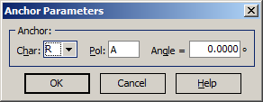

Anchor Parameters
- Color Targets also allow specifying requirements for minimal
relative change of color between some color calculated at a given angle and other parameters and the current color. For this purpose, the Anchor Color concept is introduced.
- Anchor Color is a color of the same design computed at some
given angle of incidence, characteristic (T, R, BR) and polarization.
- For Color Targets with an Anchor qualifier, it is necessary to
specify the Anchor Color. It can be done with the Anchor Parameters dialog:

In this example, Anchor Color will be calculated for normal incidence reflectance.